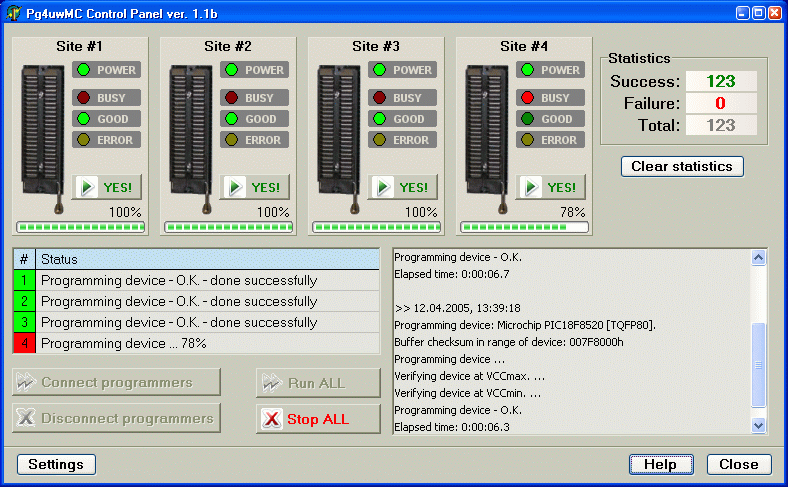

BeeHive304
(Ord. Nr. 60-0062)
Preis: 6640,00 € zzgl. MwSt.

Ultra schnelles universelles Multiprogrammiergerät mit 4x 64 Antrieben für die Produktion, das Design wurde auf die Programmierung von Speichern mit hoher Kapazität ausgerichtet.
- vier unabhängige universelle Programmierplätze (basierend auf dem BeeProg3-Programmierkern) in einer Einheit
- das Programmiergerät eignet sich perfekt für die anspruchsvolle Desktop-Programmierung, sowie für automatisierte Programmiersysteme
- Basierend auf einem hochmodernen FPGA-Design, einem leistungsstarken ARM-Prozessor und einer internen SSD ist der BeeHive304 in der Lage, Geräte mit theoretisch möglichen Geschwindigkeiten zu programmieren
- 4x 64-poliger, präziser und leistungsfähiger Pindriver liefert Programmiersignale für jede Technologie programmierbarer Geräte
- er unterstützt Geräte mit einer VCC-Spannung von nur 0,8 V
- ultraschnelle Programmiergeschwindigkeit, eines der schnellsten Programmiergeräte weltweit. Nachhaltige Programmiergeschwindigkeit von mehr als 31 MBytes pro Sekunde
- die 8 GB eMMC NAND Flash könnten in weniger als 250 Sekunden erledigt werden, wenn der unterstützte Speicher schnell genug ist
- Es verwendet sowohl universelle Programmiermodule, die für IC-Gehäusetypen geeignet sind, als auch spezielle Module, die für bestimmte Gerätefamilien optimiert sind.
- ESD-Schutz an allen Pins der Schnittstelle der Programmiermodule (Pindriver und auch unterstützende Signale)
- Zweifacher Anschluss an den PC: USB (2.0 HighSpeed) und LAN (bis zu 1 Gbit)
- komfortables und einfach zu bedienendes Steuerprogramm, arbeitet mit allen Versionen von MS Windows von Windows XP bis Windows 11 (32-bit und 64-bit) auf x86/x64 kompatiblen PCs
- zwei BeeHive304-Einheiten können an einen Steuer-PC angeschlossen werden, um den Programmierplatz besser auszunutzen
- Implementierung in verfügbare Programmierautomaten und ATE-Maschinen von Drittanbietern durch einfache Fernsteuerung
- eine Software kann bis zu 64 Programmierplätze in einem automatischen Programmiergerät bedienen (16x BeeHive304 Programmiergeräte)
- einzigartig schnelle Reaktion auf Kundenbedürfnisse - Software-Updates können innerhalb eines Tages nach Anfrage bereitgestellt werden, durch OnDemand-Software
- entwickelt und hergestellt in der Slowakei
- Garantie - 3 Jahre
- vom CE-Labor zur Erfüllung der CE-Anforderungen zugelassen
Eigenschaften
Allgemein
- Der BeeHive304 ist das nächste Mitglied der Elnec Concurrent Universal Multiprogrammer Serie, die entwickelt wurde, um die starke Nachfrage nach einem extrem schnellen und zuverlässigen Multiprogrammer für Speicher mit hoher Kapazität zu erfüllen.
- Dieses Programmiergerät, bei dessen Entwicklung großer Wert auf technische Perfektion und Geschwindigkeit der Hardware gelegt wurde, eignet sich perfekt für anspruchsvolle Desktop-Programmierung sowie für automatisierte Programmiersysteme und ATE-Maschinen, wo es höchste Qualität und Gesamtausbeute gewährleistet.
- BeeHive304 besteht aus vier unabhängigen, isolierten Universalprogrammierplätzen, die auf der BeeProg3-Programmierkern-Hardware basieren. Daher können die Programmierplätze asynchron laufen (gleichzeitiger Multiprogramming-Programmiermodus). Jeder Programmierplatz beginnt mit der Programmierung in dem Moment, in dem erkannt wird, dass der Chip korrekt in den Sockel eingesteckt ist - unabhängig vom Status der anderen Programmierplätze. Dies hat zur Folge, dass drei Programmierplätze arbeiten, während Sie am vierten Platz den programmierten Chip austauschen.
- Der BeeHive304 Multiprogrammer unterstützt so viele Chips, wie der BeeProg3 Programmer und das ohne offensichtliche Verringerung der Programmiergeschwindigkeit, da jeder Programmierplatz unabhängig arbeitet. Auch kann jeder Programmierplatz einen anderen Chip programmieren, wenn nötig.
- Da der BeeProg3-Programmierkern auf einem hochmodernen FPGA, einem leistungsstarken ARM-Prozessor und einer internen SSD basiert, ist der BeeHive304 in der Lage, Geräte mit theoretisch möglichen Geschwindigkeiten zu programmieren. Die erreichte ultraschnelle Programmiergeschwindigkeit - nachhaltig mehr als 31 MB/s - ist sogar höher, als sie für die meisten realen Geräte genutzt werden kann. Dies spiegelt sich in extrem kurzen Programmierzeiten wider. Zum Beispiel könnte ein 8 GB eMMC NAND Flash in weniger als 250 Sekunden programmiert werden - wenn der programmierte Speicher diese Geschwindigkeit zulässt.
- Tests zeigen, dass der BeeHive304 derzeit schneller ist als alle Konkurrenten in dieser Preisklasse (Stand: 10/2015), bei vielen Chips ist er sogar der schnellste überhaupt.
- BeeHive304 unterstützt alle Arten von Typen und Siliziumtechnologien heutiger und zukünftiger programmierbarer Geräte. Es unterstützt teilweise auch Geräte "von gestern". Sie können sicher sein, dass die nächste Geräteunterstützung nur ein Software-Update erfordert, höchstens (wenn nötig) ein einfaches Programmiermodul, daher werden die Betriebskosten minimiert.
- Für die korrekte und zuverlässige Programmierung von ultraschnellen Speichern verwendet der BeeHive304 spezialisierte Module, die optimal für bestimmte Bausteinfamilien entwickelt wurden, genau nach den Bedürfnissen der programmierten Bausteine. Wenn es jedoch möglich ist, werden universelle Programmiermodule verwendet, die für den IC-Gehäusetyp bestimmt sind. Die Programmiermodule sind für alle Programmiergeräte, die auf dem BeeProg3-Programmierkern basieren, identisch.
- Die Konstruktion der Programmiermodule ist für eine perfekte Stabilität an der Oberseite des Programmiergeräts ausgelegt, um robust genug für das Einsetzen/Austauschen von Chips durch einen mechanischen Arm zu sein und um die identische Position der ZIF-Buchse auch nach dem Austausch des Moduls zu erhalten.
- Der modulare Aufbau der Hardware - die Programmierplätze arbeiten unabhängig voneinander - ermöglicht einen kontinuierlichen Betrieb, wenn ein Teil der Programmierplätze ausfällt. Das macht auch die Wartung schnell und einfach.
- Die Abtastschaltungen erkennen die korrekte Platzierung des Bausteins im Sockel des Programmiermoduls, so dass die Programmierung sofort nach dem Einsetzen des Chips beginnen kann. Der Bediener entnimmt lediglich den fertigen Chip und setzt einen neuen Chip ein. Der Schulungsaufwand für den Bediener ist daher minimal.
- BeeHive304 kann über einen USB-Anschluss (2.0 HigSpeed) oder einen LAN-Anschluss (bis zu 1 GB) mit jedem IBM PC-kompatiblen Personal Computer mit MS Windows OS verbunden werden.
- Bananenbuchse für den Anschluss von ESD-Handgelenkbändern zur einfachen Implementierung der ESD-Schutzkontrolle.
- Mit seinem sehr wettbewerbsfähigen Preis in Verbindung mit einem hervorragenden Hardware-Design für eine zuverlässige Programmierung ist er wahrscheinlich das beste Preis-Leistungs-Verhältnis in dieser Klasse.
Hardware (gültig für jeden Programmierplatz)
- Der 64-polige, präzise und leistungsstarke Pindriver des BeeProg3 liefert schnelle, genaue und saubere Signalkurven an den Baustein, indem er Rauschen, Ground Bounce und Überschwingen eliminiert, was die Programmierleistung maximiert und eine lange Datenerhaltung garantiert. Dies ermöglicht auch die zuverlässige Unterstützung praktisch jeder nichtflüchtigen Technologie, die für programmierbare Bauteile verwendet wird - (E)EPROM, Flash, MRAM, PCM, ... - durch ein einziges Programmiergerät.
- FPGA-basierte, vollständig rekonfigurierbare TTL-Treiber bieten H/L/Pull_up/Pull_down- und Lesefunktionen für jeden Pin des Bausteins. Die dualen H/L-Treiber ermöglichen die Bereitstellung von zwei verschiedenen H-Pegeln sowohl für Kernsignale als auch für I/O-Signale des programmierten Bausteins ohne zusätzliche Logik. Die Pindriver des Programmiergeräts arbeiten mit bis zu 0,8 V, so dass das Programmiergerät für die Programmierung der gesamten Palette der heutigen und zukünftigen fortschrittlichen Bauteile mit sehr niedriger Spannung geeignet ist.
- Die extrem schnelle Programmierung, die durch die Verwendung einer FPGA-basierten Zustandsmaschine, eines schnellen Prozessors und einer SSD erreicht wird, ermöglicht die Ausführung aller zeitkritischen Routinen und Datenübertragungen innerhalb des Programmiergeräts.
- Das Programmiergerät führt einen Geräteeinschubtest durch, der auf der Überprüfung des korrekten Signalwegs zwischen dem Programmiergerät und dem programmierten Gerät basiert, bevor es jedes Gerät programmiert. In Abhängigkeit von der Programmierkonfiguration identifiziert es einen fehlenden oder schlechten Kontakt zwischen dem programmierten Baustein und dem ZIF-Sockel des Programmiermoduls, einen fehlenden oder schlechten Kontakt zwischen dem Programmiermodul und dem Programmiergerät und es ist auch in der Lage, eine falsche Position des Bausteins im ZIF-Sockel oder im Programmiermodul anzuzeigen (verschoben, gedreht, rückwärts ausgerichtet). Diese Funktionen, unterstützt durch einen Überstromschutz und eine Signatur-Byte-Prüfung, tragen dazu bei, eine Beschädigung des Chips aufgrund von Bedienungsfehlern zu verhindern.
- Die Selbsttestfunktion ermöglicht die Ausführung des Diagnoseteils der Software zur gründlichen Überprüfung des Zustands des Programmiergeräts.
- Eingebaute Schutzschaltungen verhindern eine Beschädigung des Programmiergeräts und/oder des programmierten Geräts durch Umwelteinflüsse oder Bedienungsfehler. Alle Eingänge des BeeProg3-Programmiergeräts, einschließlich der Pindriver-Signale, der Verbindung zum PC und des Stromversorgungseingangs, sind gegen ESD bis zu 15 kV geschützt.
- Die Programmiermodule sind für Bauteile in PDIP, PLCC, JLCC, SOIC, SDIP, SOP, PSOP, SSOP, TSOP, TSOPII, TSSOP, QFP, PQFP, TQFP, VQFP, QFN (MLF), SON, BGA, EBGA, FBGA, VFBGA, UBGA, FTBGA, LAP, CSP, SCSP, LQFP, MQFP, HVQFN, QLP, QIP und anderen Gehäusen erhältlich.
Software (Steuerung des Produktionsmodus: PG4UWMC)
- Dieser Teil der Software ist auf die einfache Überwachung von hochvolumigen Produktionsabläufen ausgerichtet.
- Die bedienerfreundliche Steuerungssoftware kombiniert viele leistungsstarke Funktionen mit einfacher Bedienung. Die grafische Benutzeroberfläche bietet einen Überblick über alle wichtigen Aktivitäten, ohne den Bediener mit unwichtigen Details zu belasten. 
- Zur Steuerung des Multiprogrammiersystems BeeHive304 wird eine Projektdatei verwendet. Die Projektdatei enthält Benutzerdaten, Informationen zur Einrichtung der Chip-Programmierung, Chip-Konfigurationsdaten, Befehlssequenzen für die automatische Programmierung usw. Da die Projektdatei normalerweise von der Technik erstellt und geprüft und dann an den Bediener weitergegeben wird, werden Bedienerfehler minimiert. Der optionale geschützte Modus kann für die Projektdatei eingestellt werden, um unerwünschte Änderungen an der Projektdatei zu vermeiden.
- Jeder Chip kann mit verschiedenen Daten wie Seriennummer, Konfigurations- und Kalibrierungsinformationen programmiert werden, wobei ein funktionsreiches Serialisierungssystem verwendet wird.
Software (Programmierplatztreiber, Engineering-Modus-Steuerungsschalter: PG4UW)
- Dieser Teil der Software ist auf die schnelle und einfache Vorbereitung der Projektdatei für die Verwendung in der Steuerungssoftware im Produktionsmodus ausgerichtet.
- Jeder Programmierplatz wird über ein komfortables und einfach zu bedienendes Steuerprogramm mit Pull-Down-Menü, Hotkeys und Online-Hilfe gesteuert. Es handelt sich um die gleiche, seit Jahren bewährte Software, die auch für alle anderen Elnec-Einzelplatzprogrammierer verwendet wird.
- Die Auswahl des Bausteins erfolgt über seine Klasse, den Hersteller oder einfach durch Eingabe eines Fragments des Herstellernamens und/oder der Teilenummer. Die Standard-Bausteinbefehle (Lesen, Leerzeichenprüfung, Programmieren, Verifizieren, Löschen) werden durch einige Testfunktionen (Einschubtest, Signatur-Byte-Prüfung) und einige Sonderfunktionen (Autoinkrement, Produktionsmodus - Beginn der Programmierung unmittelbar nach Einsetzen des Chips in den Sockel) ergänzt.
- Alle bekannten Datenformate werden unterstützt. Automatische Dateiformaterkennung und -konvertierung beim Laden der Datei.
- Die Software bietet auch - im Abschnitt Geräteinformationen - viele Informationen über das programmierte Gerät. Als Besonderheit werden die Zeichnungen aller verfügbaren Gehäuse zur Verfügung gestellt. Die Software bietet auch Erklärungen zur Chip-Kennzeichnung (die Bedeutung der Präfixe und Suffixe auf den Chips) für jeden unterstützten Chip.
- Die reichhaltig ausgestattete Serialisierungsfunktion ermöglicht es, jedem programmierten Gerät individuelle Seriennummern zuzuweisen - oder einfach eine Seriennummer zu erhöhen, oder die Funktion ermöglicht es, Seriennummern oder beliebige programmierte Geräteidentifizierungssignaturen aus einer Datei zu lesen und sie auf das programmierte Gerät zu programmieren.
- Jam-Dateien des JEDEC-Standards JESD-71 werden von Jam Player interpretiert. Jam-Dateien werden von einer Design-Software erzeugt, die vom Hersteller des jeweiligen programmierbaren Bausteins bereitgestellt wird. Chips werden über die JTAG-Schnittstelle (IEEE 1149.1 Joint Test Action Group) programmiert.
- VME-Dateien werden vom VME Player interpretiert. VME-Datei ist eine komprimierte Binärvariante der SVF-Datei und enthält High-Level IEEE 1149.1 Busoperationen. SVF-Dateien werden vom SVF Player interpretiert. SVF-Datei (Serial Vector Format) enthält High-Level-IEEE 1149.1-Bus-Operationen. SVF-Dateien werden von einer Design-Software erzeugt, die vom Hersteller des jeweiligen programmierbaren Bausteins bereitgestellt wird. Chips werden über die JTAG-Schnittstelle programmiert. VME-Dateien werden von der Design-Software erzeugt, die vom Hersteller des jeweiligen programmierbaren Bausteins zur Verfügung gestellt wird.


Umsetzung in automatisierte Programmiersysteme
- Das Programmiergerät BeeHive304 ist sowohl für den Einsatz in automatischen Programmiersystemen als auch für ATE-Maschinen zum Testen von ICs außerhalb des Fahrzeugs geeignet. Die Abmessungen des Programmiergeräts sind auf ein technisches Minimum reduziert, um den Aufwand für die Armbewegung des Bedieners zu minimieren. Die Konstruktion ist mechanisch stabil, um gegen Vibrationen während des Betriebs gefeit zu sein. Das Gehäuse des BeeHive304 ist so vorbereitet, dass es sowohl von oben als auch von unten am Arbeitsplatz des Programmiergeräts befestigt werden kann.
- Der BeeHive304 kann in ein automatisiertes Programmiergerät (z.B. als Ersatz für ein veraltetes Programmiergerät) oder in einen Handler mit mehreren Möglichkeiten implementiert werden:
-
- 1) Wenn ein oder zwei BeeHive304-Programmiergeräte ausreichen, um alle Aufgaben zu erledigen, dann genügt ein Steuer-PC für das gesamte Programmiersystem, sowohl für die Maschinensteuerung als auch für die Programmiersoftware. Der BeeHive304 kann über einen USB- oder LAN-Anschluss an diesen Computer angeschlossen werden.
- 2) Wenn mehr als zwei BeeHive304-Programmiergeräte in ein automatisiertes Programmiersystem implementiert werden sollen, müssen mehr Computer verwendet werden. Das gesamte System ist durch Vervielfachung der BeeHive304-Programmiergeräte und der Steuer-PCs auf bis zu 64 Programmierplätze in einem automatisierten Programmiersystem skalierbar. Die maximale Konfiguration umfasst 16x BeeHive304-Programmiergeräte. Ein Steuercomputer im System dient als Master-Einheit. Hier laufen auch die Multiprogrammier-Steuersoftware, die Serialisierungs-Engine und die Schnittstelle zum Host-System. Die Anbindung der Steuer-PCs im gesamten Netzwerk erfolgt über Standard-LAN.
- Die Implementierung von BeeHive304 in die Software von Programmier- und Handhabungsautomaten erfolgt über eine einfache Fernsteuerung der PG4UWMC-Steuersoftware. Es gibt Beispiele für die Implementierung in Standard-Programmiersprachen und natürlich sind wir bereit, unseren Kunden bei dieser Aufgabe zu helfen.
Betreuung der Kunden
- Antrag auf ein neues Gerät (AlgOR-Dienst)
-
- Es ist wichtig, sich daran zu erinnern, dass die Unterstützung der meisten neuen Geräte nur ein Software-Update erfordert, da der BeeHive304 wirklich ein universelles Programmiergerät ist. Mit unserem prompten Service kann die Unterstützung für das neue Gerät innerhalb weniger Stunden hinzugefügt werden! Siehe AlgOR (Algorithm On Request) Service und OnDemand Software für Details.
- Dieser Service ist in fast allen Fällen kostenlos. Bitte beachten Sie jedoch, dass wir den Kunden bitten können, sich an den Kosten zu beteiligen, wenn die Entwicklungs- und Herstellungskosten zu hoch sind.
- Kostenlose Software-Updates auf Lebenszeit
-
- Die aktuellste Version der Elnec Programmers Software, mit Unterstützung der neu hinzugekommenen Geräte, ist hier kostenlos erhältlich
- Kostenlose technische Unterstützung
-
- Elnec bietet seinen Kunden technischen Support (WebForm/e-mail-basiert), der in der Regel innerhalb weniger Stunden oder spätestens am nächsten Arbeitstag zur Verfügung steht.
- Keep-Current-Dienst
-
- Keep-Current-Service bedeutet, dass Elnec die neueste Version der Programmiergeräte-Software und die aktualisierte Benutzerdokumentation (Keep-Current-Paket) an den Kunden liefert. Der Keep-Current-Service ist Ihre problemlose Garantie dafür, dass Sie mit den Elnec-Programmiergeräten zu minimalen Kosten die höchste Programmierqualität erzielen.
- Prompte Lieferung
-
- Die Kombination aus umfangreichem Lagerbestand, flexibler Fertigung und dem Versand der Elnec-Produkte durch Weltklasse-Spediteure (wie DHL) garantiert den Kunden eine sehr schnelle und sichere Lieferung der bestellten Elnec-Produkte. Produkte, die vor 10 Uhr (MEZ) bestellt werden, werden noch am selben Werktag versandt - sofern die Produkte vorrätig sind und die Zahlung per Online-Zahlung (CardPay, PayPal) erfolgt ist.
- Garantie
-
- Das fortschrittliche Design des BeeHive304 Universal-Programmiergeräts, einschließlich Schutzschaltungen, Original-Markenkomponenten, sorgfältiger Fertigung und Einbrennen, ermöglicht es uns, eine dreijährige Garantie auf Teile und Verarbeitung des Programmiergeräts zu gewähren.
- Elnec bietet einen kostenlosen Rückversand von im Rahmen der Garantie reparierten Programmiergeräten an Kunden weltweit. Die Garantie ist ab dem Kaufdatum gültig.
- Die bevorzugte Behandlung von Reparaturanfragen gewährleistet die Registrierung des Produkts, die innerhalb von 60 Tagen ab dem Kaufdatum erfolgen sollte Produktregistrierung.
Spezifikation (BeeHive304 Multiprogrammiersystem)
- 4x universelle Programmierplätze (4x BeeProg3 Programmierkern)
- Betriebsergebnis-LEDs, LED-Leistung
- USB 2.0 High-Speed-kompatibler Anschluss, bis zu 480 Mbit/s Übertragungsrate, angeschlossen an internen USB-Hub
- 1 Gbit LAN-Anschluss, verbunden mit internem LAN-Switch
- Netzstromeingang 100-240VAC/90W max (bei Verwendung eines externen Netzteils).
- Schutz gegen Überspannung und ESD an allen Eingängen (Stromversorgung, Kommunikation, Programmiermodulschnittstelle)
- Bananenbuchse für den Anschluss von ESD-Handgelenkbändern
- Bananenstecker für den Anschluss an Masse
Spezifikation (gültig für jeden Programmierplatz) - Hardware
Basiseinheit, DACs
- USB 2.0 High-Speed-kompatibler Anschluss, Übertragungsrate bis zu 480 Mbit/s
- 100Mbit LAN-Anschluss
- Intelligenz an Bord: leistungsstarker Prozessor (ARM9 400MHz) und FPGA-basierte Zustandsmaschine (Basistakt 50 MHz plus PLLs)
- eingebautes mSATA-SSD als interner Puffer (Typ 128 GB, aufrüstbar auf höhere Kapazität)(*1, *2, *3, *4)
- drei D/A-Wandler für VCC1, VCC2 und VPP, steuerbare Anstiegs- und Abfallzeit
- VCC1, VCC2 Bereich 0.8V..7V/1A (Schritt 10mV)
- VPP-Bereich 0V..25V/1A (Schritt 25mV)
- Temperaturgesteuerte Ventilatoren
- Selbsttestfähigkeit
- Schutz gegen Überspannung und ESD am Stromversorgungseingang, am USB- und LAN-Anschluss und an den Pins der Programmiermodulschnittstelle (PMI) (IEC1000-4-2: 15kV Luft, 8kV Kontakt)
- Bananenbuchse für den Anschluss von ESD-Handgelenkbändern
- Schraube mit zwei Unterlegscheiben für die Verbindung zur Erde
Anmerkungen:
- *1: Die Daten im Puffer werden in Fragmenten gespeichert und auch teilweise komprimiert, daher kann der Puffer Standarddaten auch für größere Geräte als die aktuelle Größe des Puffers speichern
- *2: dieses Upgrade ist mechanisch kompliziert und kann nur in Elnec durchgeführt werden
- *3: Die Programmiergeräte bis einschließlich S/N 3004-00041 wurden mit 32GB SSD als internem Puffer geliefert.
- *4: die 128GB SSD kann als Puffer ungefähr 110GB der Zufallsdaten speichern (28GB im Falle der 32GB SSD), die größeren SSDs proportional. Wenn Sie planen, eMMC/NAND-Geräte zu bearbeiten/kopieren, die Zufallsdaten im gesamten Bereich der Gerätegröße enthalten könnten, empfehlen wir, einen Puffer mit gleicher Kapazität im Programmiergerät zu haben.
Pindriver (verfügbar auf der Programmiermodulschnittstelle (PMI) - Anschlüsse für Programmiermodule)
- pindrivers: 64 universal
- VCC1/VCC2 und VPP können an jeden Pin angeschlossen werden
- perfekte Masse für jeden Pin
- 2 unabhängige FPGA-basierte TTL-Treiber liefern H, L, CLK, Pull-Up, Pull-Down auf allen Pindriver-Pins, Logikpegel 0,75V - 5V (IOL und IOH Strom 20mA)
- Frequenz der Logiksignale: bis zu 125MHz (3,3V), 80MHz (5V)
- Analoger Pindriver-Ausgangspegel wählbar von 0,8 V bis 25 V
- Strombegrenzung, Überstromabschaltung, Netzausfallabschaltung
- Durchgangsprüfung: jeder Pin wird vor jedem Programmiervorgang geprüft
Software
- Algorithmen: Es werden nur vom Hersteller genehmigte oder zertifizierte Algorithmen verwendet. Benutzerdefinierte Algorithmen sind gegen eine zusätzliche Gebühr erhältlich.
- Algorithmus-Updates: Software-Updates sind regelmäßig, ca. alle 4 Wochen, kostenlos verfügbar. OnDemand-Version der Software ist für dringend benötigten Chip-Support und/oder Fehlerbehebungen verfügbar. Fast täglich verfügbar, je nach Anfrage.
- Hauptmerkmale: Revisionsverlauf, Sitzungsprotokollierung, Online-Hilfe, Geräte- und Algorithmusinformationen.
Gerätebetrieb
- Standard:
-
- intelligente Geräteauswahl nach Gerätetyp, Hersteller oder eingegebenem Fragment des Teilenamens
- Blankoscheck, Lesen, Überprüfen
- Programm
- löschen.
- Konfigurations- und Sicherheitsprogramm
- Prüfsumme
- die Jam Standard Test and Programming Language (STAPL), JEDEC-Standard JESD-71, interpretieren
- die komprimierte Binärvariante der SVF-Dateien zu interpretieren
- Interpretation der SVF-Dateien (Serial Vector Format)
- interpretieren die Actel STAPL Player Dateien
- Sicherheit:
-
- Insertionstest
- Kontaktprüfung
- ID-Byte-Prüfung
- besonders:
-
- Produktionsmodus (automatischer Start sofort nach Einsetzen des Geräts)
- Multiprojektmodus
- viele Serialisierungsmodi (mehrere Arten von inkrementellen Modi, Modus von Datei, benutzerdefinierter Generatormodus)
- Statistik
- Countdown-Modus
Pufferoperationen
- Anzeigen/Bearbeiten, Suchen/Ersetzen
- Füllen/Kopieren, Verschieben, Byte-Swap, Wort/Wort-Split
- Prüfsumme (Byte, Wort)
Datei laden/speichern
- automatische Identifizierung/Erkennung von Dateitypen Unterstützte Dateiformate
-
- unformatiertes (rohes) Binärformat
- HEX: Intel, Intel EXT, Motorola S-record, MOS, Exormax, Tektronix, ASCII-SPACE-HEX,, ASCII HEX, Renesas Consolidated HEX
- Altera POF, JEDEC (ver. 3.0.A), z.B. von ABEL, CUPL, PALASM, TANGO PLD, OrCAD PLD, PLD Designer ISDATA, etc.
- JAM (JEDEC STAPL Format), JBC (Jam STAPL Byte Code), STAPL (STAPL File) JEDEC Norm JESD-71
- VME (ispVME-Datei VME2.0/VME3.0)
- SVF (Serielles Vektorformat Revision E)
- STP (Actel STAPL-Datei)
Geräteunterstützung
Programmierer, der Programmiermodule verwendet:
- NAND FLASH: 3D-Plus 3DFNxxx, All-Flash AFAxxx, ATO Solution AFNDxxx, Axia Memory Tech. AX20xxx, Cypress (ex Spansion) S30Mxxx, S34xxx, Eon Silicon Sol. EN27xxx, EN71xxx, ESIGMA ES27xxx, ESMT F59xxx, FM6xxx, Dosilicon FMNxxx, FMNDxxx, Fidelix FMNxxx, FMNDxxx, Flexxon FHNDxxx, FORESEE FS33xxx, Fudan FM29xxx, GigaDevice GD9Fxxx, MD5Nxxx, HeYangTek HYNxxx, ICMAX IMSxxx, ISSI IS34xxx, Jeju Semiconductor JS27Hxxx, Macronix MX30xxx, MX63xxx, Micron MT29Fxxx, MT29Cxxx, MT29Rxxx (exNumonyx ex STM) NANDxxx, MIRA PSUxxx, PowerFlash ASUxxx, A1Uxxx, Samsung K9xxx, KFxxx, SK Hynix (ex Hynix) HY27xxx, H27xxx, Toshiba TC58xxx, TH58xxx, UnilC SCNxxx, Winbond W29Nxxx, W71Nxxx, XTX (ex Paragon) PN61xxx, Zentel A5Uxxx, Zetta ZDNDxxx, LBA-NAND Toshiba THGVNxxx series
- eMMC: Hynix H26Mxxxxxxxx, Kingston KE44B-xxxx/xxx, Micron MTFCxxxxxx, Numonyx NANDxxxxxxxx, Phison PSM4A11-xx, Samsung KLMxxxxxxx, SanDisk SDINxxx-xx, Toshiba THGBMxxxxxxxxxx, Flexxon FEMCxxxGTTG, ISSI, IS21ESxxG, Greenliant GLS85VMxxxxx series
- eMCP: Micron MT29xZZZxxxxxxxx series
- eSD: XTX Technology XTSDxxGLGxxx, All-Flash SDVxxxMxxxxx series
- EPROM: NMOS/CMOS, 27xxx and 27Cxxx series
- Memory Cards: MMC, SD, SDHC, SDXC series
- Multi-chip devices: NAND+RAM, NOR+RAM, NOR+NOR+RAM, NAND+NOR+RAM
- Serial Flash: standard SPI, Multi I/O - Dual I/O, Quad I/O, Dual-Quad I/O, Octa I/O (25Bxxx, 25Dxxx, 25Exxx, 25Fxxx, 25Hxxx, 25Lxxx, 25Mxxx, 25Pxxx, 25Qxxx, 25Rxxx, 25Sxxx, 25Txxx, 25Uxxx, 25Vxxx, 25Wxxx, 25Xxxx, 26Vxxx, 45PExx, MX66Lxxx, S70FLxxx, S79FL, MT35X series), DataFlash (AT45Dxxx, AT26Dxxx series)
- parallel NOR Flash: 28Fxxx, 29Cxxx, 29Fxxx, 29GLxxx, 29BVxxx, 29LVxxx, 29Wxxx, 39VFxxx, 39SFxxx, 49Fxxx series, Samsung's K8Fxxxx, K8Cxxxx, K8Sxxxx, K8Pxxxx series, ...
- HyperFlash: Cypress/Spansion/ISSI S26KL, S26KS series
- Serial E(E)PROM: Serial E(E)PROM: 11LCxxx, 24Cxxx, 24Fxxx, 25Cxxx, 30TSExxx, 34Cxxx, 34TSxx, 59Cxxx, 85xxx, 93Cxxx, NVM3060, MDAxxx series, full support for LV series, AT88SCxxx
- Serial FRAM: Cypress(Ramtron): FM24xxxxxx, FM25xxxxxx, Fujitsu: MB85RCxxxx, MB85RSxxxx, Lapis(OKI, Rohm): MR44xxxxx, MR45xxxxx series
- Serial MRAM: Everspin MR20xxx, MR25xxx series
- Configuration (EE)PROM: XCFxxx, XC17xxxx, XC18Vxxx, EPCxxx, EPCSxxx, EPCQxxx, EPCQLxxx, EPCQxxxA, AT17xxx, AT18Fxxx, 37LVxx series
- PLD Altera: MAX 3000A, MAX 7000A, MAX 7000B, MAX 7000S, MAX7000AE, MAXII/G/Z, MAX V, MAX 10 series
- PLD Intel: MAX II/G/Z, MAX V, MAX 10 series
- PLD Lattice: ispGAL22V10x, ispLSI1xxx, ispLSI1xxxEA, ispLSI2xxx, ispLSI2xxxA, ispLSI2xxxE, ispLSI2xxxV, ispLSI2xxxVE, ispLSI2xxxVL, LC4xxxB/C/V/ZC/ZE, M4-xx/xx, M4A3-xx/xx, M4A5-xx/xx, M4LV-xx/xx, ispCLOCK, Power Manager/II, ProcessorPM, CrossLink, Platform Manager/2, L-ASC10 series
- PLD Xilinx: XC9500, XC9500XL, XC9500XV, CoolRunner XPLA3, CoolRunner-II series
- SPLD/CPLD series: AMD, AMI, Atmel, Cypress, Gould, ICT, Lattice, National Semicond., Philips, STMicroelectronics, TI (TMS), Vantis, VLSI
- FPGA: Lattice: MachXO, MachXO2, MachXO3, LatticeXP, LatticeXP2, ispXPGA, iCE40 UltraPlus, iCE40 Ultra/UltraLite, iCE40 LP/HX, non-volatile key: ECP2 S-Series
- FPGA: Microsemi(Actel): ProASIC3, IGLOO, Fusion, ProASICplus, SmartFusion
- FPGA: Intel/Altera, non-volatile key: Cyclone V
- FPGA: Xilinx: Spartan-3AN
- Special chips: STM LED Array Drivers ALED1262xxx series
- Microcontrollers Analog Devices: ADuC8xx series
- Microcontrollers Abov Semiconductor: GMS97Cxxx, GMS97Lxxx, GMS99Cxxx series
- Microcontrollers Atmel AVR 8bit/16bit: AT90Sxxxx, AT90pwm, AT90can, AT90usb, ATtiny, ATmega, ATxmega series
- Microcontrollers Atmel AVR32: AT32UC3xxxx, ATUCxxxD3/D4/L3U/L4U series
- Microcontrollers Atmel/Microchip/Temic MCS51 series: AT(T)89C/F/S/LS/LV/LP series
- Microcontrollers Atmel/Microchip ARM AT91SAM7Sxx, AT91SAM7Lxx, AT91SAM7Xxx, AT91SAM7XCxx, AT91SAM7SExx series
- Microcontrollers Atmel/Microchip ARM9: AT91SAM9xxx series;
- Microcontrollers Atmel/Microchip ARM Cortex-M0+: ATSAMD2x, ATSAMC2x, ATSAMD09x, ATSAMD10x, ALSAML2x, ATSAMHAx, ATSAMR2x series
- Microcontrollers Atmel/Microchip ARM Cortex-M3: ATSAM3Axxx, ATSAM3Uxxx, ATSAM3Nxxx, ATSAM3Sxxx, ATSAM3Xxxx series
- Microcontrollers Atmel/Microchip ARM Cortex-M4: ATSAM4Sxxx, ATSAMG5x, ATSAM4LCx, ATSAM4LSx series
- Microcontrollers Atmel/Microchip ARM Cortex-M4F: ATSAMD51x, ATSAME53x series
- Microcontrollers Atmel/Microchip ARM Cortex-M23: ATSAML10x, ATSAML11x series
- Microcontrollers Atmel/Microchip ARM Cortex-M7: ATSAME70x, ATSAMV70x, ATSAMV71x, ATSAMS70x series
- Microcontrollers Azoteq: IQS5xx series
- Microcontrollers Cypress: CY7Cxxxxx, CY8Cxxxxx series
- Microcontrollers Cyrod Technologies MCS51: CRD89C/L/V series
- Microcontrollers Energetic Technology: ET12xx, ET22xx, ET23xx series
- Microcontrollers Explore Microelectronic: EPF01x, EPF02x series
- Microcontrollers Freescale Semiconductor: S12X series
- Microcontrollers Coreriver: Atom 1.0, MiDAS1.0, 1.1, 2.0, 2.1, 2.2, 3.0 series
- Microcontrollers GigaDevice: GD32Exxx, GD32Fxxx series
- Microcontrollers Hitachi: H8 series, H8S series, H8 Tiny series, SH series
- Microcontrollers Infineon(Siemens): XC2000, XE164 series
- Microcontrollers ICSI/ISSI MCS51: IS89C/E/LV series
- Microcontrollers Lapis Semiconductor: ML620Qxxxx series
- Microcontrollers Megawin: MG87xxx, MPC82xxx series
- Microcontrollers Microchip PICmicro: PIC10xxx, PIC12xxx, PIC16xxx, PIC18xxx, PIC24xxx, dsPIC, PIC32xxx series
- Microcontrollers Mitsubishi: M16C series
- Microcontrollers Motorola/Freescale: S12, MCF52 (ColdFire), MC56F, Kinetis (K,L) series, Qorivva/5xxx Power Architecture
- Microcontrollers NEC: uPD70Fxxx, uPD78Fxxx series
- Microcontrollers Nordic Semiconductor: nRF24LExxx, nRF24LUxxx, nRF315xx, nRF51xxx, nRF52xxx Flash and OTP series
- Microcontrollers Nuvoton ARM Cortex-Mx: NUC1xx, NUC2xx, M05x, Mini51, Nano1xx series
- Microcontrollers Nuvoton (Winbond) MCS51 series: N79xxx, W77xxx, W78xxx, W79xxx, W83xxx series
- Microcontrollers NXP (Philips/Trident Microsystem) UOC series: UOCIII, UOC-TOP, UOC-Fighter (TDA1xxxx) series
- Microcontrollers NXP (Philips) MCS51 series: 87Cxxx, 87LVxx, 89Cxxx, 89Sxxx, 89Fxxx, 89LVxxx, 89LSxxx, 89LPxxx, 89Exxx, 89Lxxx, LPC series
- Microcontrollers NXP (Philips) ARM Cortex-Mx: LPC11xx, LPC11Cxx, LPC11Dxx, LPC11Uxx, LPC11Axx, LPC11Exx, LPC11xxLV, LPC12xx, LPC12Dxx, LPC13xx, LPC15xx, LPC17xx, LPC18xx, LPC40xx, LPC43xx, LPC8xx, EM7xx, MPT6xx, LPC541xx, LPC546xx, PN73xx, PN74xx series
- Microcontrollers NXP (Philips) ARM7: LPC2xxx, MPT6xx series
- Microcontrollers NXP (Motorola/Freescale Semiconductor): S12, S12X, Kinetis series
- Microcontrollers Panasonic: MN101, MN103 series
- Microcontrollers Princeton MCS51: PT89xx series
- Microcontrollers Renesas: R8C/Tiny series, RX series, uPD70Fxxx, uPD78Fxxx series, RL78 series, R32C series, RH850 series, H8 series, H8S series, H8 Tiny series, SH series, M16C series
- Microcontrollers Ramtron (Goal Semiconductor) MCS51 series: VRS5xx, VRS7xx, VRS9xx, VRS1xxx, VRS51C(L)xxx, VRS51C(L)7xx, VRS51C(L)9xx, VRS51C(L)1xxx series
- Microcontrollers Silicon Laboratories(Cygnal): C8051 series
- Microcontrollers Silicon Laboratories(Ember) ARM Cortex-Mx: EM34x, EM35x, EM358x, EM359x series
- Microcontrollers Silicon Laboratories(Energy Micro): EFM32Gxx, EFM32GGxx, EFM32LGxx, EFM32TGxx, EFM32WGxx series
- Microcontrollers Silicon Laboratories: SiM3Cxxx, SiM3Lxxx, SiM3Uxxx series
- Microcontrollers Spansion(Fujitsu): MB90Fxxx, MB91Fxxx, MB95Fxxx, MB96Fxxx, MB9AFxxx, MB9BFxxx series
- Microcontrollers STM (SGS-Thomson): SPC5 (Power Architecture), ST6xx, ST7xx, ST10xx, STR7xx, STR9xx, STM32F/G/H/L/W, STM8A/S/L/T series
- Microcontrollers SyncMOS: SM39xxx, SM59xxx, SM73xxx, SM79xxx, SM89xxx series
- Microcontrollers Syntek MCS51: STK6xxx series
- Microcontrollers Tekmos MCS51: TK87Cxxx series
- Microcontrollers Texas Instruments (Chipcon): CC11xx, CC24xx, CC25xx, CC85xx series
- Microcontrollers Texas Instruments ARM Cortex-Mx: CC13xx, CC2538xxx, CC26xx series
- Microcontrollers Texas Instruments (Luminary Micro): LM3Sxxx, LM3Sxxxx series, LM4Fxxxx series, TM4C series
- Microcontrollers Texas Instruments: MSP430 series
- Microcontrollers Texas Instruments: TMS320F series
- Microcontrollers Toshiba: TX03 series
- Microcontrollers Topro MCS51: TP28xx series
- Microcontrollers Nuvoton (Winbond) MCS51 series: N76xxx, N79xxx, W77xxx, W78xxx, W79xxx series
- Microcontrollers Nuvoton ARM Cortex-Mx: NUC029xxx, NUC1xx, NUC2xx, M05x, MINI5x, NDA1xx, NANO1xx series
- Microcontrollers ZILOG: Z8Fxxxx, Z8FMCxxxxx, Z16Fxxxx, ZGP323xxxxxx, ZLP12840xxxxx, ZLP323xxxxxxx, ZLF645xxxxxxx series
- .
- --- we're also working on the support of discontinued/obsolete/rare devices mentioned below this line ---
- .
- EEPROM: NMOS/CMOS, 28xxx, 28Cxxx, 27EExxx series, 3D Plus 3DEExxxxxxxx series
- FRAM: Ramtron
- MRAM: Everspin MRxxxxx8x, 3D Plus 3DMRxxxxxxxx series
- NV RAM: Dallas DSxxx, SGS/Inmos MKxxx, SIMTEK STKxxx, XICOR 2xxx, ZMD U63x series
- mDOC H3: SanDisk (ex M-Systems) SDED5xxx, SDED7xxx, MD2533xxx, MD2534xxx, Hynix HY23xxx series
- 1-Wire E(E)PROM: DS1xxx, DS2xxx series
- Clocks: TI(TMS), Cypress
- PLD Altera: Classic
- PLD AMD, TI(TMS): Bipolar families
- Special chips: Atmel Tire Pressure Monitoring ATA6285N, ATA6286N; PWM controllers: Zilker Labs, Analog Devices; Multi-Phase ICs: IR(Chil Semiconductor); Gamma buffers: AUO, Maxim, TI, ...
- Microcontrollers MCS51 series: 87Cxxx, 87LVxx all manufacturers
- Microcontrollers ELAN: EM78Pxxx series
- Microcontrollers EPSON: S1C17 series
- Microcontrollers Generalplus: GPM8Fxxx series
- Microcontrollers GreenPeak: GPxxx series
- Microcontrollers Infineon(Siemens): XC800, C500, XC166, C166 series
- Microcontrollers MDT 1xxx and 2xxx series
- Microcontrollers Motorola/Freescale: HC05, HC08, HC11, HC12, HCS08, RS08, MCF51 series
- Microcontrollers Myson MTV2xx, 3xx, 4xx, 5xx, CS89xx series
- Microcontrollers National: COP8xxx series
- Microcontrollers Novatek: NT68xxx series
- Microcontrollers NXP (Philips) ARM7: PCD807xx, SAF7780xxx series
- Microcontrollers NXP (Philips) ARM9: LPC31xx series
- Microcontrollers Texas Instruments: MSC12xx series, CC430 series
- Microcontrollers ZILOG: Z86/Z89xxx series
- Microcontrollers other: EM Microelectronic, Hitachi, Holtek, Novatek, Macronix, Samsung, Toshiba, Mitsubishi, Realtek, M-Square, ASP, Coreriver, Gencore, EXODUS Microelectronic, TinyARM, VersaChips, SunplusIT, M-Square, QIXIN, Signetic, Tekmos, Weltrend, Amic, Ember, Samsung, ABOV Semiconductor...
Anmerkungen:
- für alle unterstützten Geräte siehe GERÄTLISTE.
Unterstützung von Paketen
- Die Gehäuseunterstützung umfasst DIP, SDIP, PLCC, JLCC, SOIC, SOP, PSOP, SSOP, TSOP, TSOPII, TSSOP, QFP, PQFP, TQFP, VQFP, QFN (MLF), SON, BGA, EBGA, FBGA, VFBGA, UBGA, FTBGA, LAP, CSP, SCSP, LQFP, MQFP, HVQFN, QLP, QIP usw.
Geschwindigkeit der Programmierung
Anmerkungen:
- Es ist wichtig zu erwähnen, dass wir immer Zufallszahlen als Datenmuster für den Test der Programmiergeschwindigkeit verwenden. Einige unserer Konkurrenten verwenden "spärliche" Datenmuster, bei denen nur eine geringe Anzahl von nicht-leeren Daten programmiert wird oder Daten mit nur wenigen 0-Bits (FE, EF, etc.) verwendet werden. Dieser betrügerische Ansatz kann die Programmierzeit beträchtlich "verkürzen". Wenn Sie einen Vergleich anstreben, sollten Sie immer fragen, welches Muster sie verwenden.
- Die Programmiergeschwindigkeit hängt praktisch nicht vom PC-Typ ab, da die Daten für die Programmierung und der Hauptteil des Programmieralgorithmus intern im Programmiergerät gespeichert sind.
- Alle unten genannten Bausteine, einschließlich der beiden NAND-Flash-Bausteine, werden mit ihrer maximalen Geschwindigkeit programmiert, die Programmierzeit kann nicht kürzer sein.
- Derzeit gibt es nicht sehr viele Geräte, bei denen die 30+ MB/s BeeHive304 Programmiergeschwindigkeit genutzt werden kann.
Allgemein
Dokumentation
- Benutzerhandbuch für die Programmiergeräte BeeHive304 und BeeProg3 (PDF)
PC-Systemanforderungen
- Gemeinsame, softwarebezogene Anforderungen
- Anforderungen an die Programmiererhardware:
-
- entweder ein USB-Anschluss, 2.0-kompatibel
- oder ein LAN-Anschluss
Operation
- externes Netzteil: Betriebsspannung 100-240V AC, max. 90-264 VAC, 47 63Hz. Ausgangsspannung: 15 V, 6 A, Länge des Ausgangskabels 120 cm (47,2 Zoll)
- Leistungsaufnahme max. 90W aktiv
- Abmessungen des BeeHive304 Programmiergeräts: 320,5 x 205 x 58,4 mm ( 12,6 x 8,1 x 2,3 Zoll). Die Abmessungen wurden ohne eingesetztes Programmiermodul gemessen und beinhalten keine Vorsprünge. Die Gesamthöhe des BeeHive304 Programmiergeräts mit eingesetztem Programmiermodul hängt von der Höhe der ZIF-Buchse am Modul ab und kann zwischen 76-88 mm variieren.
- Gewicht des Programmiergeräts ohne Programmiermodule: 3,6 kg (7,9 lb)
- Betriebstemperatur: 5°C ÷ 40°C (41°F ÷ 104°F)
- Betriebsfeuchtigkeit: 20%..80%, nicht kondensierend
Das Paket enthält
Programmiergerät und Standardzubehör:
- BeeHive304 Programmierer
- Netzkabel (Europa / USA / Japan)
- externe Stromzufuhr
- Verbindungskabel PC-Programmiergerät, USB-Anschluss (1x)
- Diagnose-Pod für Selbsttest des Programmiergeräts und Test der Kalibrierung (AP3 Diagnose-Pod, 1x)
- Befestigungsschraube für das Programmiermodul (4x)
- AP3 Staubschutzabdeckung (1x)
- Krawatte und Krawattenhalter zur Befestigung von Kabeln (3x)
- Schraube mit zwei Unterlegscheiben für Erdungsanschluss (1x)
- M4x70 DIN912 Schraube mit Unterlegscheibe zur Befestigung des Programmiergeräts am Sockel (6x)
- Schnellstartanleitung
- CD mit Software und Benutzerhandbuch
- Kalibrierprüfbericht
- Aufkleber "Elnec programmer inside" (2x)
- Aufkleber "Registrieren Sie Ihr Programmiergerät" (1x)
- Merkblatt "Hinweise zu ESD" (1x)
- Transportkoffer (Pappkarton)
Bonuspaket:
- ESD-Handgelenkband mit Kordel und Bananenstecker
- Vakuum-Stift
Zusätzliche Dienstleistungen
- Keep Current - Elnec sendet dem Benutzer die neueste Version der Programmiersoftware und die aktualisierte Benutzerdokumentation (Keep-Current-Paket)
- AlgOR (Algorithms On Request) - Hinzufügen neuer unterstützter Geräte auf Anfrage des Kunden
Der Preis für das Programmiergerät umfasst auch
- kostenloser technischer Support (WebForm/e-mail-basiert)
- lebenslanges kostenloses Software-Update über das Internet